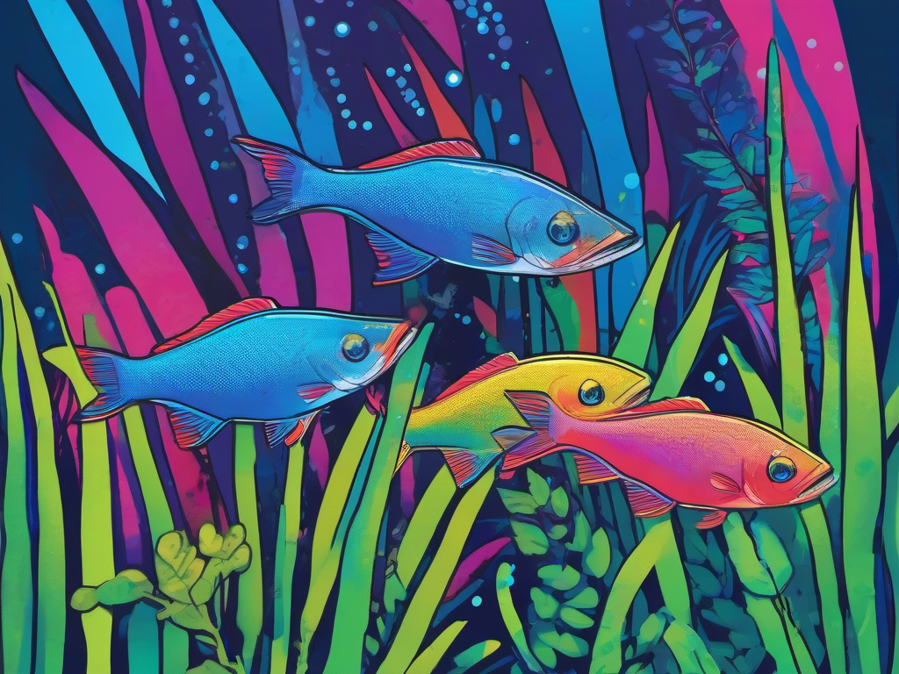

Salmler (Characiformes) sind eine der artenreichsten Fischordnungen überhaupt und stammen überwiegend aus Süd- und Mittelamerika sowie Afrika. Im Aquarium erfreuen sie sich großer Beliebtheit – allen voran der leuchtende Neonsalmler (Paracheirodon innesi) und der farbenfrohe Rote von Rio (Hyphessobrycon flammeus). Kaum eine andere Fischgruppe vereint so viele pflegeleichte, friedliche und farbenprächtige Arten für das Gesellschaftsbecken wie die Salmler.
Die meisten Salmler sind Schwarmfische, die in Gruppen von mindestens 8–10 Artgenossen gehalten werden sollten. Erst im Schwarm zeigen sie ihr volles Farbspiel und ihr natürliches Verhalten. In der Natur bewohnen sie oft saure Weichwasserbiotope mit dichter Vegetation und weichem Bodengrund – Bedingungen, die wir im Aquarium nachahmen können.
Die Auswahl an Salmler-Arten für das Aquarium ist riesig. Hier die beliebtesten Arten für Einsteiger und Fortgeschrittene:
Der absolute Klassiker unter den Salmlern! Kaum ein Aquarianer kommt an diesen bezaubernden Fischen vorbei. Der Neonsalmler wird etwa 3–4 cm groß und besticht durch einen leuchtend blauen Längsstreifen, der von einem roten Bauchstreifen begleitet wird. Seine Haltung ist unkompliziert: Temperaturen von 22–26 °C, ein pH-Wert zwischen 6,0 und 7,5 und weiches bis mittelhartes Wasser (GH 5–15 °dGH). Neonsalmler sind ausgesprochen friedlich und eignen sich perfekt für das Gesellschaftsbecken ab 60 cm Kantenlänge. Im Schwarm von mindestens 10 Tieren wirken sie am schönsten.
Alles für die perfekte Salmler-Haltung: Futter, Wassertests, Technik.
👉 Salmler & Zubehör bei AmazonDer Rote von Rio, auch als „Feuersalmler“ bekannt, ist ein wunderschöner, kleiner Salmler aus dem südöstlichen Brasilien. Männchen leuchten zur Paarungszeit intensiv rot und haben eine markante schwarze Zeichnung auf der Afterflosse. Mit maximal 3,5 cm bleiben sie angenehm klein. Sie bevorzugen Temperaturen um 22–26 °C, einen pH von 6,0–7,5 und weiches bis mittelhartes Wasser. Die Art gilt als etwas scheuer als der Neonsalmler und benötigt daher dichte Bepflanzung mit Versteckmöglichkeiten – am besten mit feinfiedrigen Pflanzen wie Cabomba oder Hornkraut sowie etwas Schwimmbepflanzung.
Der Grüne Neon oder auch „Blauer Neon“ ist dem Neonsalmler sehr ähnlich, wird aber etwas kleiner (2–3 cm) und zeigt eine noch intensivere, fast metallisch wirkende blaue Leuchtfarbe. Sein roter Bauchstreifen ist weniger ausgeprägt. P. simulans stammt aus dem Rio Negro und benötigt daher weicheres, saureres Wasser (pH 5,5–6,8, GH bis 10 °dGH). Er ist etwas empfindlicher als der normale Neonsalmler, aber bei stabilen Wasserwerten durchaus gut haltbar.
Der Schwarze Neon ist ein eleganter Kontrast zu den blauen und roten Salmlern. Er wird bis zu 3,5 cm groß und zeigt einen breiten, schwarzen Längsstreifen, der von einem leuchtend weißen bis goldgelben Streifen überlagert wird. Diese Art ist sehr robust und pflegeleicht, verträgt pH-Werte von 6,0–7,5 und Temperaturen von 23–27 °C. Ein echter Tipp für Einsteiger und ein hervorragender Begleiter für Neonsalmler.
Der Kaiserstaler ist einer der imposantesten Salmler für das Aquarium. Männchen erreichen bis zu 6 cm und tragen eine prächtige, bläulich schimmernde Körperfärbung mit dunklem Längsband und gelben Schwanzflossen. Im Gegensatz zu vielen anderen Salmlern zeigen Kaiserstaler eine ausgeprägte Rangordnung – die Männchen konkurrieren prachtvoll um die Gunst der Weibchen, bleiben dabei aber friedlich. Haltung: pH 6,0–7,5, Temperatur 23–27 °C, Becken ab 80 cm.
Salmler sind aktive Schwimmer, die ausreichend Platz zum Schwimmen brauchen. Faustregel: Je größer der Schwarm, desto größer das Becken. Für die meisten kleinbleibenden Arten wie Neonsalmler oder Rote von Rio reicht ein Becken ab 60 cm Länge (ca. 54 Liter). Für Kaiserstaler und andere größere Salmler sollte das Becken mindestens 80 cm (ca. 112 Liter) lang sein. Wichtig: Salmler sind Schwarmfische – sie sollten nie in Gruppen unter 8–10 Tieren gehalten werden. Ein zu kleiner Schwarm führt zu Scheu, Farbverlust und Stress.
Die Einrichtung sollte sich an den natürlichen Lebensräumen der Salmler orientieren. Folgende Elemente sind ideal:
Die meisten Salmler stammen aus südamerikanischen Schwarzwasserflüssen mit weichem, saurem Wasser. Auch wenn viele Arten inzwischen an härteres Wasser angepasst sind, fühlen sie sich bei naturnahen Werten am wohlsten:
Regelmäßige Wasserwechsel von 25–30 % pro Woche sind Pflicht. Ein Tropfen-Testkit zur Wasseranalyse sollte zur Grundausstattung jedes Aquarianers gehören. Besonders bei empfindlichen Arten wie dem Blauen Neon oder Diskussalmlern ist die Wasserqualität entscheidend.
Stabile Wasserwerte sind das A und O jeder Salmler-Haltung. Die Fische verzeihen zwar den einen oder anderen Ausrutscher – wer aber langfristig Freude an leuchtenden, aktiven Schwärmen haben möchte, sollte die Wasserpflege nicht vernachlässigen.
Salmler sind ausgesprochen friedliche Schwarmfische und lassen sich hervorragend mit anderen kleinen, ruhigen Arten vergesellschaften:
Nicht geeignet sind große, räuberische Fische wie Skalare, Diskus, größere Buntbarsche oder Arowanas – sie sehen den kleinen Salmlern als Beute an. Auch zu lebhafte oder aggressive Fische wie Sumatrabarben sollten vermieden werden.
Salmler sind in der Nahrungswahl nicht wählerisch – sie sind Allesfresser mit einer Vorliebe für tierisches Futter. Eine abwechslungsreiche Ernährung fördert die Farbenpracht und die Gesundheit:
Gefüttert wird 1–2 Mal täglich in kleinen Portionen, die innerhalb weniger Minuten vollständig gefressen werden. Ein Fastentag pro Woche entlastet den Stoffwechsel der Fische und das biologische Gleichgewicht des Beckens.
Die Faustregel „1 cm Fisch pro Liter“ gilt auch für Salmler, jedoch sollte man aufgrund ihrer Schwimmaktivität eher vorsichtig besetzen. Ein 60-cm-Becken (54 Liter) kann mit einem Schwarm von 10–15 Neonsalmlern und einigen Bodenbewohnern gut besetzt werden. Für ein 80-cm-Becken (112 Liter) sind 20–25 Salmler und kleine Welse oder Garnelen ideal. Überbesatz führt zu Stress, schlechter Wasserqualität und Krankheiten.
Die Zucht von Salmlern ist eine spannende Herausforderung. Während einige Arten wie der Rote von Rio relativ einfach ablaichen, benötigen andere spezielle Bedingungen:
Die meisten Salmler sind Freilaicher, die ihre Eier zwischen feinfiedrigen Pflanzen absetzen. Für eine erfolgreiche Nachzucht ist ein separates Zuchtbecken (20–30 Liter) mit folgenden Bedingungen empfehlenswert:
Die Zucht von Neonsalmlern gilt als anspruchsvoll. Die Eier sind extrem lichtempfindlich und müssen nach dem Ablaichen sofort abgedunkelt werden. Nach etwa 24 Stunden schlüpfen die Larven, die dann noch 4–5 Tage von ihrem Dottersack zehren. Die Aufzucht der winzigen Jungfische erfolgt mit Pantoffeltierchen, später mit Artemia-Nauplien. Der Durchbruch gelingt nicht jedem – aber der Stolz, wenn die ersten kleinen Neonsalmler heranwachsen, ist unbeschreiblich.
Der Rote von Rio ist deutlich zuchtfreundlicher. Ein gut konditioniertes Pärchen laicht auch im Gesellschaftsbecken ab – allerdings überleben die Eier und Jungfische dort nur selten. In einem separaten Zuchtbecken mit feinfiedrigen Pflanzen oder Laichmops gelingt die Vermehrung meist problemlos. Die Jungfische sind nach dem Freischwimmen schon etwas größer als Neonsalmler und nehmen feines Staubfutter oder Artemia-Nauplien an.
Laichmopps, Zuchtbecken, Aufzuchtfutter – alles für die erfolgreiche Nachzucht.
👉 Zuchtbedarf bei Amazon entdeckenSalmler sind bei guten Haltungsbedingungen robuste Fische. Dennoch können Krankheiten auftreten – meist sind sie auf Stress, schlechte Wasserqualität oder Einschleppung durch Neuzugänge zurückzuführen:
Die beste Vorbeugung: Quarantäne für neue Fische (mindestens 2–3 Wochen), regelmäßige Wasserwechsel, eine abwechslungsreiche Ernährung und konstante Wasserwerte. Ein gut eingefahrenes Aquarium mit stabiler Bakterienkultur ist die halbe Miete.
Neben den Klassikern gibt es spektakuläre Arten, die etwas mehr Erfahrung und spezielle Wasserwerte erfordern:
Beilsalmler sind faszinierende Oberflächenfische, die durch ihre kräftigen Brustmuskeln sogar kurze Strecken über der Wasseroberfläche gleiten können. Sie benötigen ein gut abgedecktes Becken und schwimmendes Futter (Insekten, Flockenfutter). Größe: bis 6 cm, Haltung im Schwarm ab 10 Tieren, Becken ab 100 cm Länge.
Eine der ungewöhnlichsten Salmler-Arten: Der Schrägsalmler schwimmt stets in einer 45-Grad-Schräglage mit leicht nach oben gerichtetem Kopf – ein faszinierender Anblick! Sehr friedlich, bis 5 cm groß, geeignet für Becken ab 80 cm Länge.
Mit 6–7 cm einer der größeren Salmler für das Aquarium. Er hat leuchtend rote Augen und einen silbrig glänzenden Körper mit markanter Schwanzflossenzeichnung. Aktiv und robust, aber nicht für das Nano-Becken geeignet – mindestens 112 Liter Beckenvolumen.
Auch wenn der Name gefährlich klingt – Scheibensalmler (oft fälschlich als „Pflanzenpiranhas“ bezeichnet) sind friedliche Schwarmfische, die sich hauptsächlich von pflanzlicher Kost ernähren. Sie werden bis 15 cm groß und benötigen entsprechend große Becken ab 400 Litern! Nur für erfahrene Aquarianer mit großem Becken geeignet.
Auch erfahrene Aquarianer machen manchmal typische Anfangsfehler. Hier die häufigsten Stolperfallen:
Salmler gehören zu den schönsten und dankbarsten Aquarienfischen überhaupt. Ob die leuchtenden Neonsalmler, die auffälligen Roten von Rio oder die eleganten Schwarzen Neons – mit diesen Schwarmfischen holt man sich ein Stück südamerikanischer Flusslandschaft ins Wohnzimmer. Sie sind überwiegend pflegeleicht, friedlich und bei richtiger Haltung echte Dauerbewohner (Neonsalmler können 5–8 Jahre alt werden).
Voraussetzung für lange Freude an den Tieren sind: ein ausreichend großes Becken, stabile Wasserwerte, eine naturnahe Einrichtung, regelmäßige Pflege und vor allem – ein artgerecht großer Schwarm. Wer diese Grundlagen beachtet, wird mit einem atemberaubenden Farbenspiel im Aquarium belohnt.
Mehr zum Thema Vergesellschaftung und Aquarium-Einrichtung findest du in unserem Einsteiger-Guide sowie im Vergesellschaftungs-Guide.